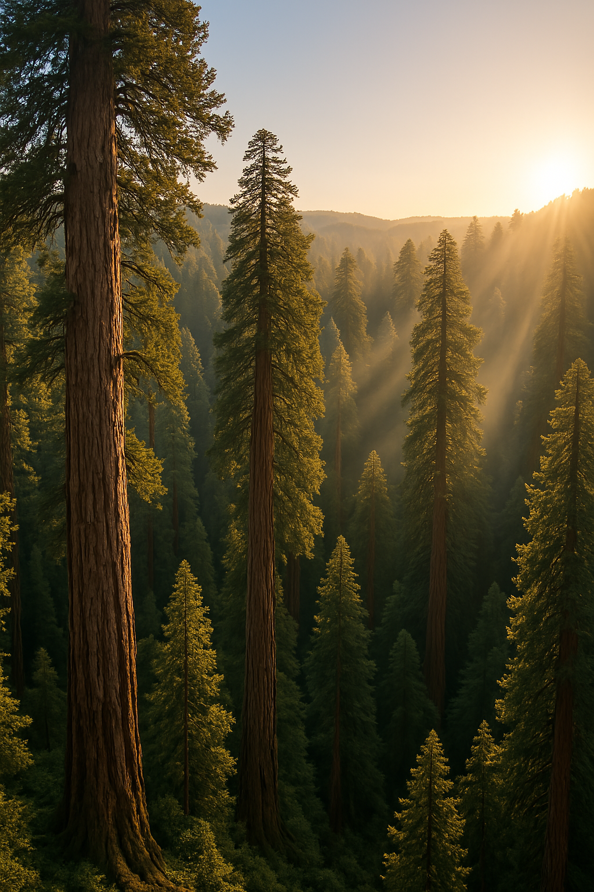

Creative Writing with AI
A short sci-fi story co-written with GPT-4.5
The Sequoian
Morning came early to the forest, golden fingers pushing between the trunks as if hesitant to disturb the ancient quiet. Mist drifted gently among towering sequoias whose bulk stretched skyward, massive and impossibly old, their tops lost among drifting fog and golden rays of sunlight. The sunlight filtered softly downwards, catching droplets suspended from moss-covered branches, each drop shimmering briefly before falling to damp earth with a gentle plop. The air was rich—thick with the scent of wet bark, decomposing leaves, and the faint sweetness of distant blooms.
The stillness was complete, profound, as if the forest held its breath. No birds sang yet, only the quiet drip of moisture and the distant, muted murmurs of water trickling along hidden streams. Beneath the immense trees, the forest floor was carpeted with dense, lush ferns, their fronds heavy with moisture, softly rustling with the occasional stirring of unseen creatures.
Then, into this sacred quiet, voices drifted—soft, cautious, their tones muffled yet jarringly intrusive.
"…no rangers this far… pay them off easy enough…"
"…protected by some old laws. You can't even buy this land… "
"…just old stories to scare people ... nothing out here…"
The figures appeared gradually, ghostlike through the fog—two men, boots squelching softly into mossy ground. The older one walked ahead, his movements brisk, fallen branches cracking under his feet. He bore ahead through the underbrush, dismissive of his companion’s hesitation. The other, slightly younger but more graceful trailing behind, eyes darting nervously from shadow to shadow, his body tense with unspoken anxiety.
Their murmurs rose and fell, indistinct, swallowed by the immensity around them. The snippets of conversation that broke through echoed strangely, distorted by thick trunks and swirling mist.
"... can get thousands per fang… just a few ... set for life…"
The forest listened impassively, timelessly. Far beneath the hush of dripping leaves and swaying ferns, something vast shifted—slow, deliberate, and ancient. A presence not asleep, but waiting.
Ahead, unseen by the men, hidden by a curtain of vines and decades of unchecked growth, the ruins of an old laboratory lay crumbling into decay. Concrete walls, moss-covered and cracked, crumbled quietly beneath invading roots. A gaping hole marred one side, shattered glass with the edges of the metal frame twisted outward.
Part II – The Anomaly
The creature had no footsteps, no scent, and cast no shadow. Alder had hunted his whole life, but nothing about this thing made sense.
It looked assembled, like it had been built rather than born. And it didn’t belong here.
Part III – The Memory Loop
In a small hidden library under the town’s temple, Alder found the first journal. It was written in his own hand—but he’d never seen it before.

“You’ve been here before,” it began.